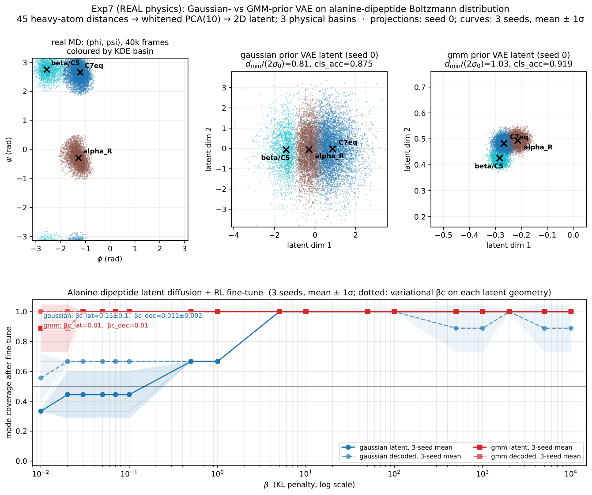
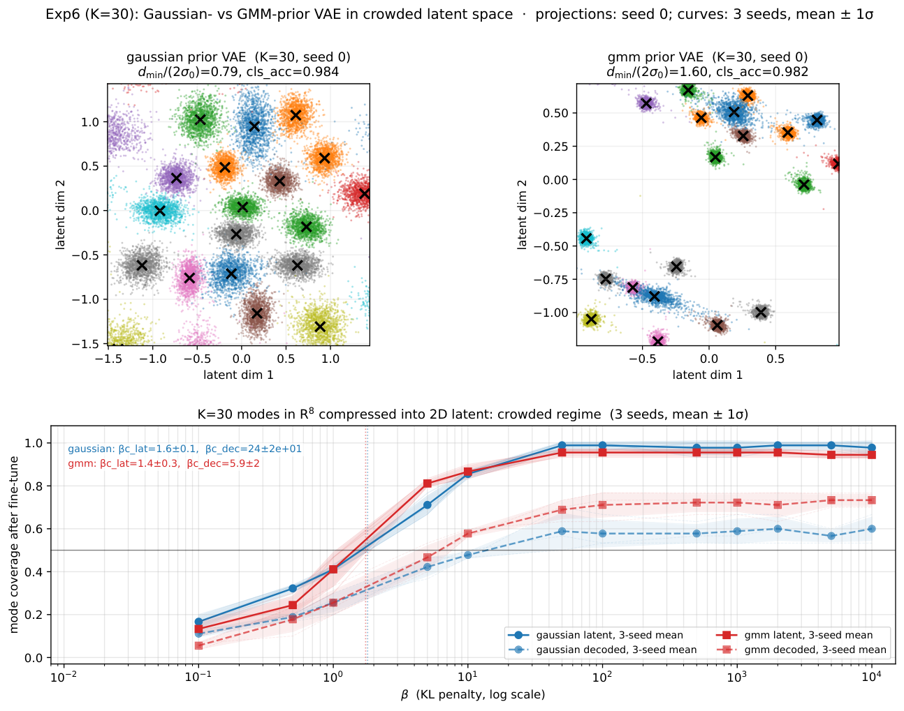

Lean 4 with Mathlib machine-checks the algebraic skeleton of the paper's theory, including the width-center formula, the crossover identity and the limit claims.
Abstract
Latent diffusion models almost universally place a Gaussian prior on the VAE latent space. For base generation this default is unproblematic; under reinforcement-learning fine-tuning, however, it carries a structural limitation. The standard VAE's KL term does not merely ignore mode structure - it actively taxes separation and tightness. When data are multimodal, the ELBO optimum compresses distinct modes into an overlapping latent. RL fine-tuning amplifies this overlap: the score network is under-resolved on the saddle region between modes, dynamic-to-variational amplification rises sharply, and the collapse boundary beta_c is pushed far above its variational scale. On the real alanine-dipeptide Boltzmann distribution, a Gaussian-prior VAE collapses at beta_c = 0.224 while a mode-tracked Gaussian-mixture prior collapses at 0.00316, a 71x gap from the same pipeline. We trace this gap to a single geometric mediator, d_min/(2 sigma_0), and verify the causal chain through controlled interventions: moving geometry at fixed prior, and switching prior at matched geometry (full mediation; prior-label coefficient 0.995x, 95% CI [0.79, 1.25]). A three-source decomposition localises the amplification to the learned policy (zero ODE-solver contribution, bounded anchor mismatch); the coverage plateau is an unconditional benefit of mode-separating priors that no amount of RL capacity recovers. The remedy is conditional: a non-Gaussian prior is necessary precisely when the latent geometry would fall into overlap and the task is coverage-sensitive. A machine-checked theory skeleton supports the KL pricing structure - a divergent compactness tax under a Gaussian prior versus a finite assignment fee under a mixture - and the position-versus-plateau distinction delimits what is finite-resource from what requires changing the prior.
Problem
Latent diffusion models place a Gaussian prior on the VAE latent space by default. Under RL fine-tuning with a KL anchor, this prior can compress multimodal data into overlapping latents and shift the collapse boundary beta_c. The question is when and why this limitation matters.
Approach
Closed-form reverse-KL analysis of a Gaussian-mixture reference under a quadratic reward gives the tilted optimum and the crossover beta_cross = 2 lambda sigma_0^2. Controlled experiments, including on the real alanine-dipeptide Boltzmann distribution, test the separation-to-width ratio d_min/(2 sigma_0) as the mediator. Interventions either move the latent geometry at a fixed prior or switch the prior at matched geometry. The algebraic skeleton of the main theorem, propositions and decomposition is formalised in Lean 4 with Mathlib (v4.3.0), and the paper reports zero build errors.

Figure 8: Exp7: Latent geometry and coverage for alanine dipeptide. Top left : Real MD data in (\phi,\psi) torsion space, coloured by KDE basin assignment (beta/C5, C7eq, alpha_R). Top middle : Gaussian prior VAE latent space (seed 0) — the three basins overlap ( d_{\min}/(2\sigma_{0})=0.81 , cls_acc =0.875 ). Top right : GMM prior VAE latent space (seed 0) — the three basins form clearly separate
Results
On alanine dipeptide, the Gaussian-prior VAE collapses at beta_c = 0.224 versus 0.00316 for a mode-tracked GMM prior, a 71x gap that is fully mediated by latent geometry. Empirical beta_c scales linearly with lambda (slope 0.96 against a predicted 1.0). Mode-separating priors give a coverage-plateau benefit that additional RL capacity does not recover.

Figure 7: Exp6 K=30: Latent geometry and coverage in the crowded regime. Top : VAE latent space projections (2D, seed 0) for Gaussian (left) and GMM (right) priors, coloured by true mode identity. The Gaussian prior compresses K=30 modes into an overlapping envelope ( d_{\min}/(2\sigma_{0})=0.79 ), while the GMM prior — shown here as an illustrative example of a mode-separating prior — maintains s
Quantity
Gaussian
GMM
Ratio
beta_c^var (analytic)
2.41e-5
3.49e-5
0.69x
beta_c^dyn (empirical)
0.224
3.16e-3
70.8x
Variational vs. dynamic collapse boundary on alanine dipeptide